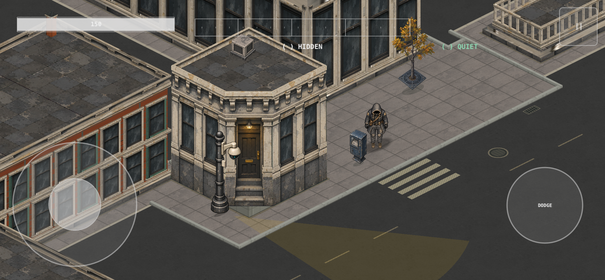
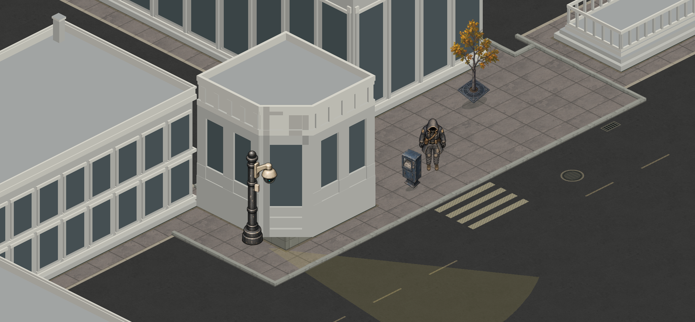
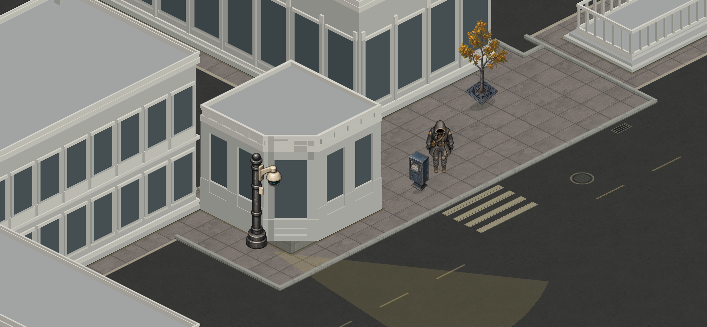
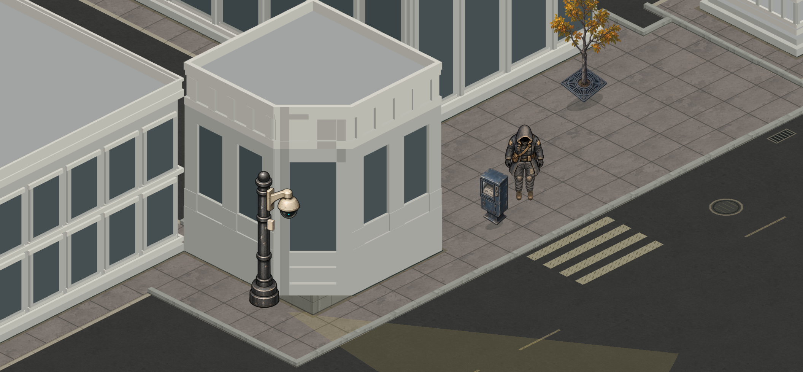
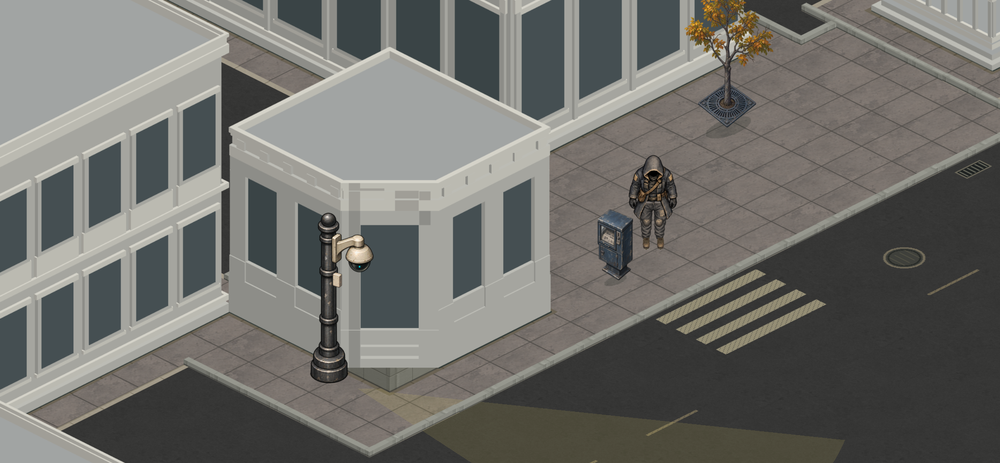
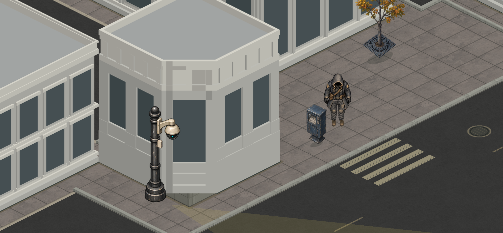
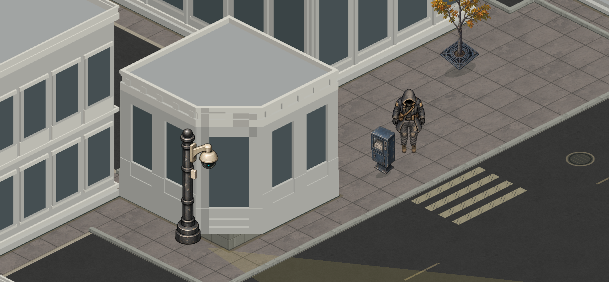

Architecture before surface detail
One proposed massing study. Owner review required. The six gray-building views below are a synthetic source-scene reconstruction, not native captures, accepted art, or a production change. Player, Camera, ground plan, roots, framing and depth authority are retained. No automatic aesthetic retry.
Compare doorway clearance, window and story heights, roof/cornice mass, facade height and depth against the unchanged Player and Camera. Current and proposed use the same source-view renderer. Real-world dimensions are not asserted.
Source-view limits: the raster roof vent, native shadows and HUD/controls are not drawn in these gray-building views. Runtime controls remain unchanged. Ground and field use source reconstruction, not native pixels. Context doorways absent from the original geometry cannot be certified.
Reference, kept whole
Original benchmark · full image

V9 · retained native context

Zoom 1.00 · same retained framing
Proposed source dimensions: kiosk top 132 → 104, roof parapet 7 → 4, entry clearance 65.66 → 62. Residential story pitch 46 → 66. Civic facade 142 → 120. Player visual reference: 49.5 units from root to alpha top. XY dimensions and depth remain unchanged.
Current proportions · untextured

Proposed proportions · untextured

Zoom 1.25 · same retained framing
Current proportions · untextured

Proposed proportions · untextured

Zoom 1.40 · same retained framing
Current proportions · untextured

Proposed proportions · untextured
